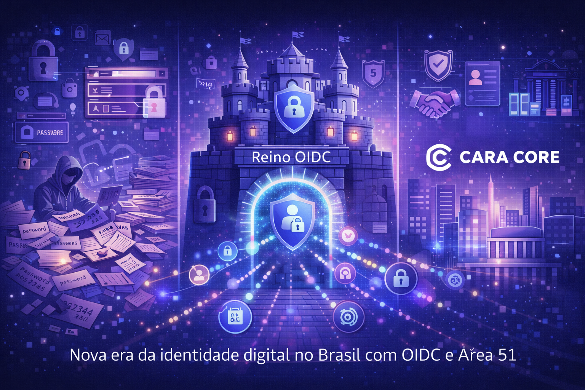

Reino OIDC e Área 51: A Nova Era da Identidade Digital Brasileira
Introdução: O Caos das Senhas e a Necessidade de Identidade Federada
No Brasil, a identidade digital ainda vive um paradoxo: cada aplicação pede login e senha; o usuário repete credenciais em dezenas de sistemas; vazamentos e reutilização de senha amplificam o risco. Empresas médias querem single sign-on, auditoria e conformidade com LGPD, mas muitas não sabem por onde começar — e as soluções globais nem sempre falam a língua local ou cabem no orçamento.
O Reino OIDC e a Área 51 são a resposta da Cara Core para esse cenário: o Reino é um produto de estudo para entender a dinâmica do protocolo (OIDC, OAuth 2.1, PKCE), voltado a entusiastas de tecnologia e segurança; a Área 51 é suporte especializado para empresas que precisam implantar e operar identidade federada no dia a dia. Este artigo explica o problema da identidade no Brasil, o que é OIDC, o que é o Reino e o que é a Área 51, casos de uso, segurança e o futuro da identidade no país.
1. O Problema da Identidade Digital no Brasil
Fragmentação é a regra: cada sistema tem seu próprio cadastro, sua própria política de senha e seu próprio fluxo de recuperação. O colaborador acumula dezenas de credenciais; o departamento de TI não tem visão unificada de quem acessa o quê; a auditoria vira quebra-cabeça. Quando a LGPD exige rastreabilidade e consentimento, a empresa descobre que não sabe nem quantos "logins" existem espalhados.
Segurança padece: senha fraca ou reutilizada abre porta em vários sistemas; falta de single sign-on incentiva anotar senha em papel ou em arquivo; revogação de acesso ao desligar um colaborador vira corrida contra o tempo em várias ferramentas. O problema não é só técnico — é de governança. Identidade bem desenhada centraliza quem é quem, o que pode acessar e como isso é auditado.
No Brasil, empresas médias e órgãos públicos precisam dessa governança sem necessariamente contratar um provedor global caro ou montar um time interno gigante. É aí que entra oferta local especializada: padrões abertos (OIDC, OAuth 2.1), implementação e suporte em português, e preço e escopo que cabem no contexto nacional.
2. O Que É OIDC
OpenID Connect (OIDC) é um padrão aberto construído sobre OAuth 2.0. Em resumo: em vez de cada aplicação guardar senha do usuário, ela delega a autenticação a um provedor de identidade (IdP). O usuário faz login uma vez no IdP; o IdP emite um token (JWT) que atesta quem é o usuário e quais atributos ele tem. A aplicação confia no token e não precisa armazenar senha.
Os benefícios são diretos: login único (single sign-on), menos superfície de ataque (senhas concentradas no IdP, não em cada app), revogação centralizada e auditoria em um só lugar. OIDC define fluxos seguros, incluindo PKCE (Proof Key for Code Exchange) para aplicações públicas e clientes móveis, reduzindo risco de interceptação.
O Reino OIDC é o produto da Cara Core que implementa esse padrão com outro propósito: entender na prática a dinâmica do protocolo. É um produto de estudo, voltado a entusiastas de tecnologia e segurança que querem ver OIDC, tokens e fluxos de autenticação funcionando de ponta a ponta. Material gratuito (FREE) e versão paga (O Trono da Identidade) permitem explorar o ecossistema de identidade de forma hands-on.
3. O Que É a Área 51
A Área 51 é a "oficina" da Cara Core para identidade enterprise: não é só software, é suporte especializado para empresas que precisam configurar e operar portais de autenticação com OAuth 2.1, OIDC e PKCE. Muitas organizações querem sair do caos de senhas e adotar identidade federada, mas não têm equipe interna para desenhar fluxos, integrar aplicações e manter conformidade. A Área 51 entra aí: consultoria e implementação que conectam um provedor de identidade (IdP) ao mundo real da empresa — usando os mesmos conceitos que o entusiasta estuda no Reino OIDC, em escala operacional.
O foco são empresas médias no Brasil: quem precisa de single sign-on, auditoria e LGPD sem virar projeto de multinacional. O produto (portais, configuração, boas práticas) e o suporte (implementação, treinamento, evolução) andam juntos. A loja da Área 51 e o portal no site Cara Core apresentam o serviço; quem contrata ganha um parceiro técnico que fala a língua dos padrões e da regulamentação local.
4. Casos de Uso
Identidade federada com OIDC e OAuth 2.1 serve a vários cenários:
- Empresas com múltiplos sistemas: ERP, portal do cliente, ferramenta interna: um único login, um único lugar para revogar acesso e auditar.
- Desenvolvedores e entusiastas: usar o Reino OIDC para estudar OIDC e OAuth 2.1 na prática; em produção, integrar sua aplicação a um IdP (com suporte da Área 51 se precisar de implementação enterprise).
- Órgãos públicos e compliance: exigências de auditoria, LGPD e governança são atendidas com rastreabilidade de acesso e consentimento.
- Parceiros e ecossistema: APIs e integrações podem usar OAuth 2.1/OIDC para autorizar acesso entre sistemas de forma padronizada e segura.
Reino OIDC cobre o aprendizado do protocolo; Área 51 cobre a implantação e a operação no dia a dia da organização.
5. Segurança e Governança
LGPD exige que o controlador saiba quem acessa dados pessoais, com que finalidade e por quanto tempo. Identidade centralizada e auditável é a base para responder a isso: logs de login, emissão de token e revogação de acesso permitem demonstrar conformidade e reagir a incidentes.
Boas práticas — OAuth 2.1, PKCE, tokens de vida curta, refresh controlado — reduzem risco de vazamento e abuso. O Reino OIDC e a Área 51 seguem esses padrões; quem implementa com o suporte da Cara Core alinha técnica e governança. Auditoria deixa de ser "onde está a planilha de acessos" e vira "consulta ao sistema de identidade".
6. O Futuro da Identidade no País
O Brasil tende a exigir cada vez mais transparência e controle sobre dados e acessos. Identidade federada, single sign-on e padrões abertos (OIDC, OAuth 2.1) deixam de ser opção de grandes corporações e passam a ser necessidade de empresas médias e órgãos públicos. Quem adota cedo ganha vantagem em segurança, produtividade e compliance.
A Cara Core segue investindo no Reino OIDC e na Área 51 como eixos do portfólio: produto de estudo (Reino) para entusiastas e desenvolvedores que querem entender OIDC e OAuth 2.1, e suporte (Área 51) que leva identidade enterprise para quem precisa de parceiro técnico no Brasil. A nova era da identidade digital brasileira passa por padrões abertos, oferta local e governança clara — e é nisso que estamos trabalhando.
Conclusão: Identidade Como Infraestrutura
Reino OIDC e Área 51 não são "mais um login". São a aposta da Cara Core em identidade digital: OIDC e OAuth 2.1 no centro, produto de estudo (Reino) para quem quer entender o protocolo na prática, e suporte (Área 51) para empresas e aplicações que querem segurança, auditoria e LGPD sem depender apenas de soluções globais. O problema da identidade no Brasil é real; a resposta é padrão aberto, aprendizado hands-on e parceiro que fala a sua língua.
Hashtags
Contato
- E-mail: suporte@caracore.com.br
- Site: www.caracore.com.br
- LinkedIn: Cara Core Informática
Conecte-se conosco no LinkedIn para mais conteúdos sobre identidade digital, OIDC e segurança.
Seguir no LinkedIn
Artigo publicado em 11 de abril de 2026
© 2026 Cara Core Informática. Todos os direitos reservados.